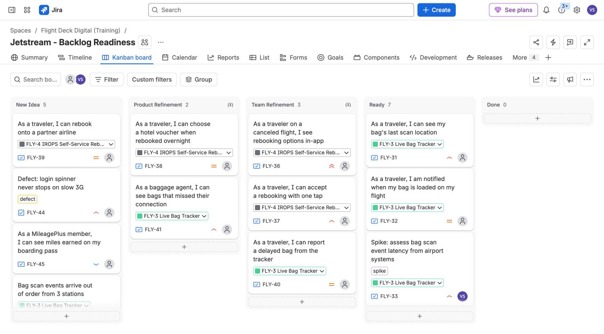

The full program for Working with Jira, tailored for Digital Technology: modules, learning objectives, durations, delivery formats, prerequisites, how learners move up, the live-demo and sandbox plan, and where the Golden Template fits.
Most Digital Technology Jira users are new to Jira or use only the basics, while Plans, eazyBI and Zephyr go largely unused. The program has three levels so each learner starts where they are and moves up when ready. The original one-day course outline is kept and redistributed across the levels. Service-desk and admin topics stay out of scope.
Level
Audience
Duration
Format
Exit criteria
L1 · Ground School
Everyone new to Jira, plus anyone who only uses the basics
3.5 h (2.5 h live + 1 h on-demand)
Blended
Checkride ≥ 80%, which also unlocks Rovo access
L2 · First Officer
Team members, Scrum Masters, PMs and POs who use Jira every day
5 h (two 2.5 h sessions or one half day)
Live, instructor-led, hands-on
Checkride ≥ 80% plus 2 completed missions
L3 · Captain
Scrum Masters, PMs, engineering leads, QA leads, Jira champions
6.5 h (one full day or three 2 h labs)
Live lab
Checkride ≥ 80% plus the IROPS Day capstone
Rovo Flight Manual
All levels (core content sits in L1 and L2)
1.5 h self-paced
On-demand + labs
Rovo quiz
JQL Simulator
L2 and L3
Self-paced
On-demand
18 graded challenges
Design principleEvery concept ends in a mission on the live FLY sandbox. Learners earn miles, take a checkride, and leave with saved filters, a dashboard and prompts they can reuse on Monday.
Level 1
Ground School: Getting to Know Jira
3.5 hBlendedPrereq: Jira accountUnlocks Rovo
By the end, learners can…
Explain what a space, board, backlog and work item are, and find their way around Jira in under a minute.
Find, create and update work correctly: good summaries, acceptance criteria, links, comments, @mentions, flags.
Read a Scrum or Kanban board and explain why an item might be missing from it.
Use Rovo Search, Chat and in-Jira AI features responsibly, choose chat or an agent appropriately, and verify AI output.
Recognize the Golden Template's statuses and sprint naming.
Code
Module
Key content
Time
Format
GS-1
Welcome aboard: spaces & navigation
For you, Recent, Starred, spaces, boards, search, shortcuts
Rule anatomy, smart values, agents in Jira, governance, audit
45 m
Live lab
CP-6
Claude + Atlassian MCP
Setup, good uses, metric risks, Co-Pilot Protocol, prompt injection
60 m
Live lab + handout
CP-7
Jira ↔ Git
Keys in branches/commits/PRs, smart commits, development panel, deployments
30 m
Live demo
★
Capstone: IROPS Day
Timed, multi-skill scenario across the FLY sandbox
60 m
Team lab
P Prerequisites & progression
Enroll→L1 Ground School→Checkride ✓ · Rovo on→L2 First Officer→Checkride + 2 missions→30 days on a team→L3 Captain→Capstone ✓ · Jira Champion
Level
Must have
Recommended
Fast track
L1
Jira account with access to the training space
Pluralsight “Jira Getting Started”
N/A
L2
L1 checkride ≥ 80%
Pluralsight “Planning, Tracking, and Releasing Software with Jira” skill assessment
Pass the L1 checkride cold (skip test) to go straight to L2
L3
L2 checkride + 2 missions; on an active team
Comfortable writing JQL without help
Instructor sign-off for existing Jira champions
Rovo roll-out gateThe L1 checkride is written as a Rovo readiness check. It covers what Rovo is for, chat versus agents, verifying output and responsible use. Passing it can be the trigger for enabling Rovo for that learner, which gives a clean, auditable roll-out path.
GT Recommendation: where the Golden Template fits
Recommendation: make the Golden Template the backbone of Level 2, preview it in Level 1, and use it as the substrate for Level 3. Do not teach it as a standalone lecture.
L1 · Vocabulary
15-minute preview: the two boards, the standard statuses and sprint names. Learners can read a standard board without being able to configure one.
L2 · Practice
FO-1 teaches it in depth. Every L2 mission runs on a template-shaped sandbox, so the standard is learned by working inside it.
L3 · Measure & automate
Advanced JQL, eazyBI, Zephyr gates and automation all build on template statuses. Example: bounce-back rate from eQE Testing to Development.
Also ship it as a job aidA one-page Golden Template quick-reference card (statuses with exit criteria, board filters, sprint naming, Definition of Ready) handed out at L1 and used throughout.
D Live demo plan
Demo
Level
What attendees see
Sandbox state needed
Sandbox tour
L1
Spaces → boards → work item → search in 5 minutes
FLY space, both boards starred
Rovo in Jira
L1–L2
Summarize FLY-36, Ask AI → JQL (with a deliberate “verify this” moment), Improve Story
Rovo enabled; comment threads on FLY-25/36/46
Two-board model
L2
Backlog Readiness Kanban with WIP limits feeding the Sprint Execution board
Both boards configured (done)
Sprint planning
L2
Plan JET-2026.q4.4 against a 24-point capacity with a blocking spike
Future sprints populated (done)
Flow metrics with JQL
L3
Bounce-backs, carry-over, aging WIP turned into dashboard gadgets
History seeded (done)
Plans capacity crunch
L3
Cut capacity 30% in a scenario and watch the release slip
Premium site required
eazyBI + Zephyr
L3
Bounce-back report; release readiness gate for Mobile 5.3
Apps installed + data imported
Claude + MCP
L3
Read-only digest → dry-run → confirmed write → JQL verification; FLY-55 prompt-injection red team
Atlassian connector allowed for the training site
Connecting Jira to Git
L3
Branch feature/FLY-21-push-alert → commit with smart commit → PR → development panel
GitHub/Bitbucket app connected to a demo repo
S Hands-on training instance (sandbox) plan
A working prototype already exists: the FLY space on the Pluralsight training site, built to the Golden Template. For delivery we recommend cloning this design into a United-owned training site so attendees use their real SSO identities.
…/projects/FLY/boards/4

Backlog Readiness board in the prototype sandbox, with WIP limits on the refinement columns.
Element
Prototype (today)
Production training site
Workflow
New Idea → Product Refinement → Team Refinement → Ready → To Do → Development → Ready for eQE → eQE Testing → PO Review → Ready for Release → Done
Golden Template materials: the current official version, so the sandbox and job aid match exactly.
A training site or sandbox space on Premium, so Plans and the Initiative hierarchy can be demoed. A Premium trial also works.
Learner accounts with SSO for each cohort, plus permission for learners to create and transition items in the training space.
Rovo enabled on the training site for all attendees, plus confirmation of the policy that turns it on after the L1 checkride.
Rovo agent process: the agent request and submission process, so the agent-design mission produces a real submission.
eazyBI and Zephyr installed on the training site with data imported. Confirm which Zephyr edition is used.
MCP setup handout (internal steps) to send before L3, plus confirmation that the Atlassian connector is allowed on the training site and whether API-token auth is enabled.
A demo Git repository connected to the training site (GitHub or Bitbucket app) for the Jira ↔ Git demo.
Existing Jira 101 and intro session recordings to align terminology and reuse the best examples in L1.
Two or three real (sanitized) team examples: a messy backlog and a dashboard leadership uses, so missions feel like home.
F Delivery options
Option A · Tiered (recommended)
L1 blended (on-demand + one 2.5 h live session), L2 as two 2.5 h live sessions a week apart, L3 as a full-day lab for selected practitioners. Run separate US and IKC cohorts in local business hours.
Best for adoption, Rovo gating and real practice between sessions.
Option B · One-day intensive
Keeps the original 9:00–5:00 single-day format: L1 in the morning, L2 in the afternoon, with L3 offered later as a separate advanced day.
Simpler scheduling, but less time to practice between levels.
KPI Measuring success
Signal
How we measure it
Target (90 days)
Rovo adoption
Checkride pass → Rovo enabled → monthly active Rovo users
≥ 70% of L1 graduates active
Backlog hygiene
JQL: Ready items with points and acceptance criteria / all Ready items
≥ 90%
Plans usage
Teams with an active Plan used in PI or quarterly planning
Every L3 graduate's team
Zephyr adoption
Stories in Ready for Release with linked test executions
≥ 60% for pilot teams
Metric integrity
Share of AI-assisted writes labeled and reviewed (MCP / Rovo)